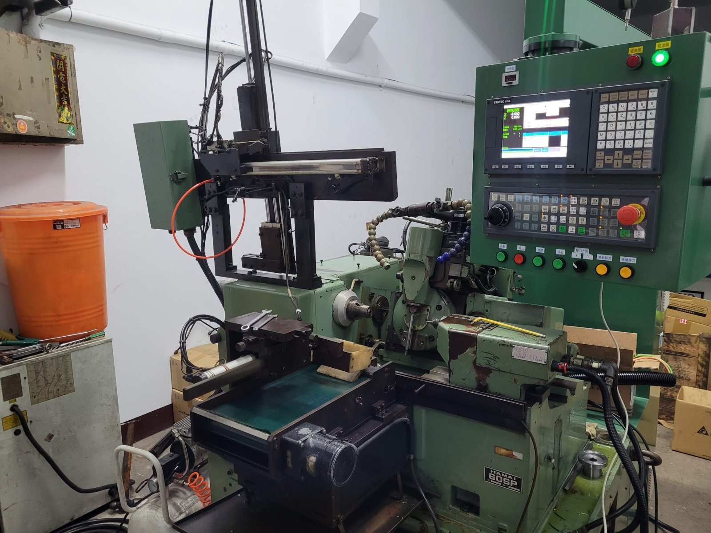
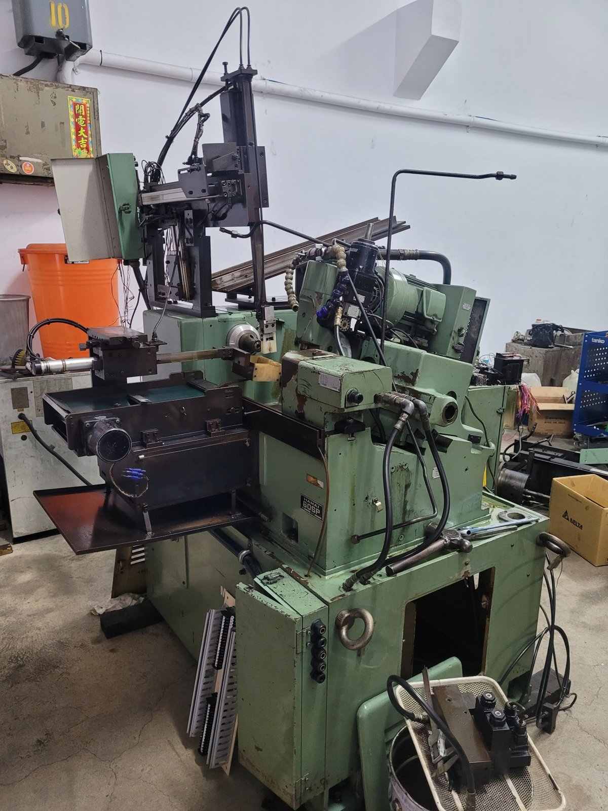
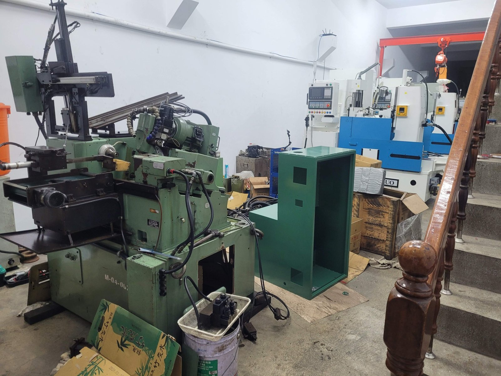
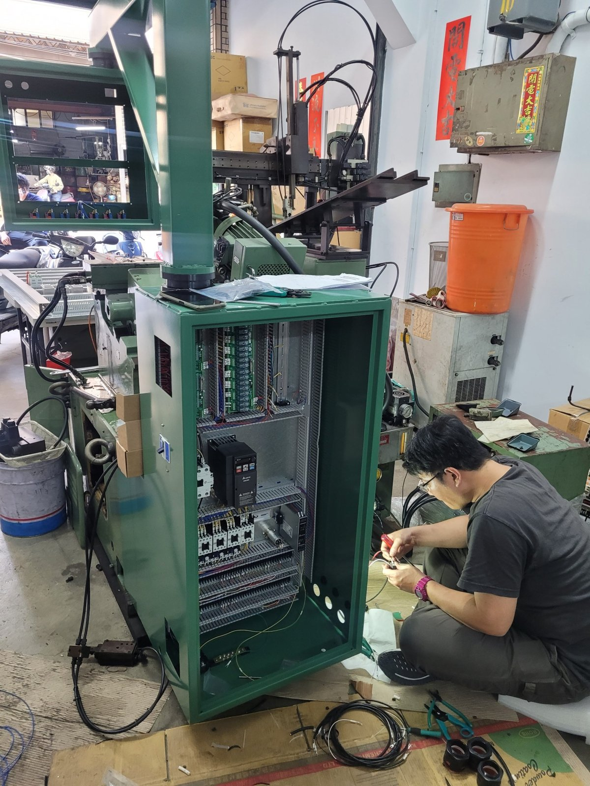

專案範圍與照片紀錄
- HAMAI 60SP 滾齒機與 CNC 操作面板
- HAMAI 60SP 滾齒機原機台
- HAMAI 60SP 機台與控制箱組裝
- HAMAI 60SP 控制箱配線作業
專案照片




點選照片可開啟大圖。
洽詢相關服務
歡迎提供設備廠牌、型號、控制器資訊、目前問題及預期需求，與我們討論合適的處理方案。
聯絡我們 返回專案實績機械設備改造
HAMAI 60SP 滾齒機 CNC 改造，展示原機台、控制箱組裝、電控配線與 CNC 操作面板。




點選照片可開啟大圖。
歡迎提供設備廠牌、型號、控制器資訊、目前問題及預期需求，與我們討論合適的處理方案。
聯絡我們 返回專案實績